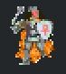

Class Overview
Role: Support Class
"The Cleric is a great team supporter, granting healing to yourself and others."

Default Male Cleric Sprite

Default Female Cleric Sprite
Role: Support Class
"The Cleric is a great team supporter, granting healing to yourself and others."

Default Male Cleric Sprite
Default Female Cleric Sprite
| Stat | Base Value | Gain per Level |
|---|---|---|
| Hit Points (HP) | 735 | 146 |
| Magic Points (MP) | 100 | 1 |
| Stamina Points (SP) | 120 | 1 |
| Physical Attack (ATK) | 250 | 2 |
| Physical Defense (DEF) | 25 | 0 |
| Ranged Attack (RAT) | 220 | 2 |
| Ranged Defense (RDF) | 25 | 0 |
| Magical Attack (MAT) | 220 | 2 |
| Magical Defense (MDF) | 25 | 0 |

Cleric Healing an Ally
Clerics provide a single target heal to another teammate/ally or themselves.
This heal restores 35% of Magic Damage. Increasing levels improves the amount healed.
Cooldown: 2.5 seconds when used on yourself or allies.
Cleric Reviving an Ally
Clerics can use a Tome of Revival to revive teammates during dungeons or combat.
Each tome can be used 3 times before needing replacement.